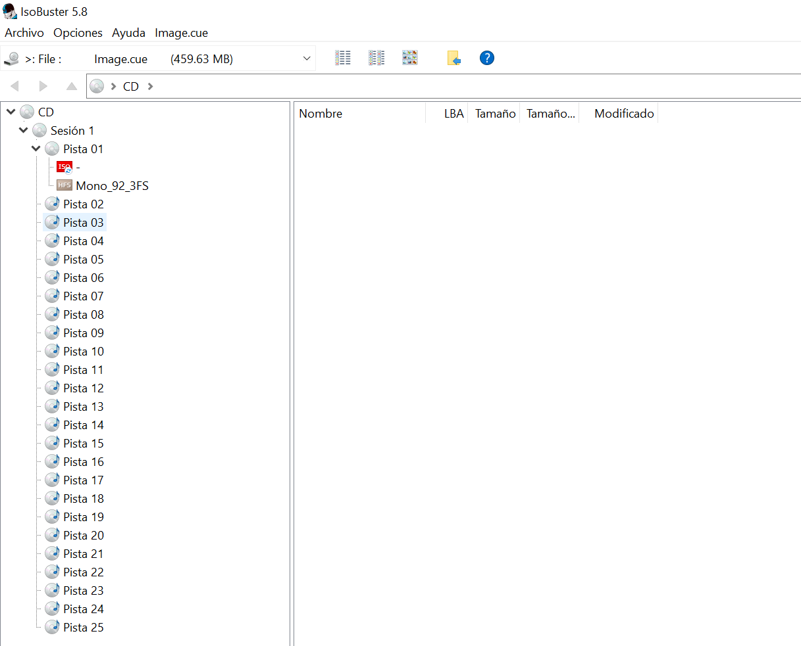
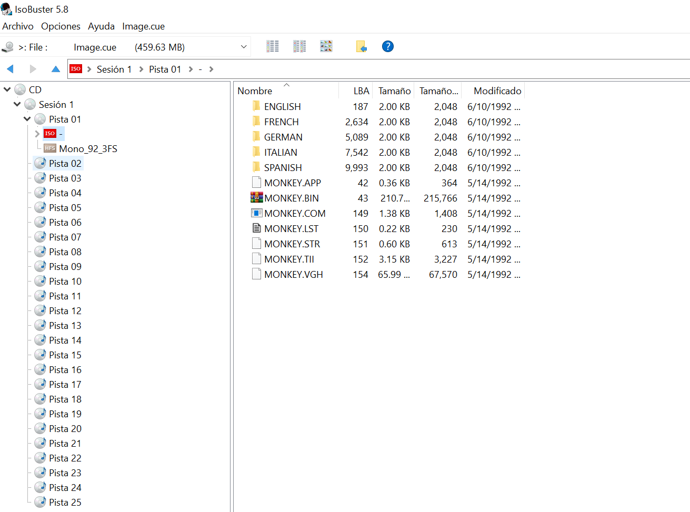
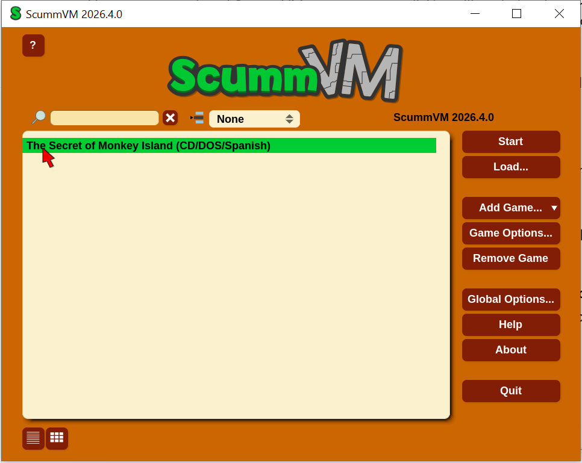
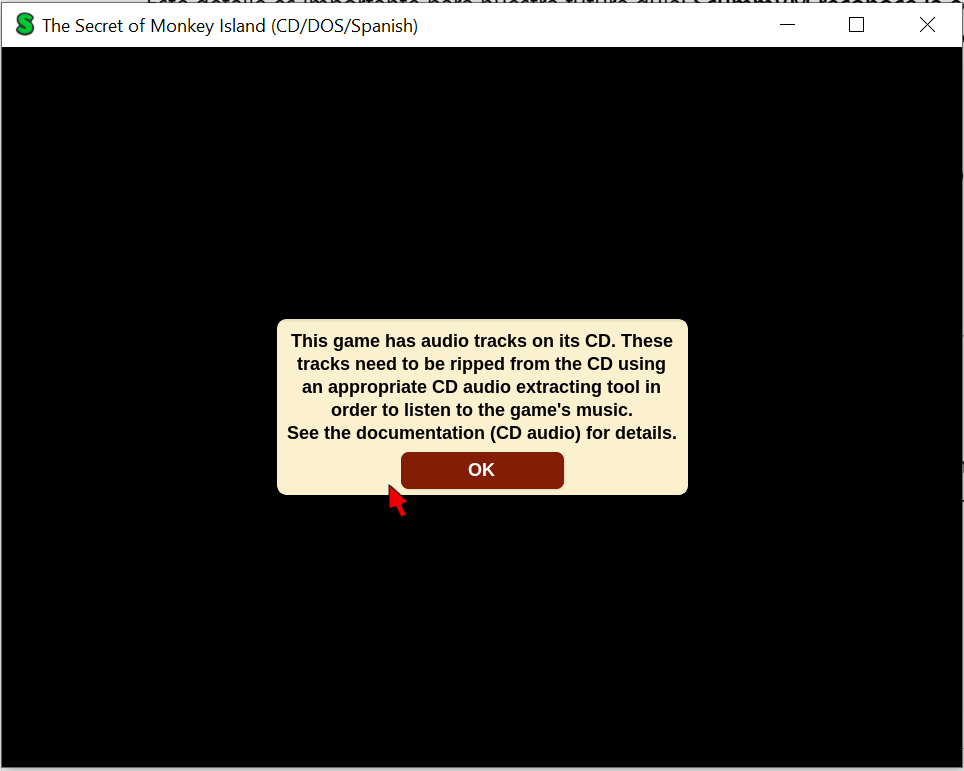

Esta guía recoge el procedimiento probado por PC Game Archive para ejecutar The Secret of Monkey Island — edición Jewel Case en CD-ROM en Windows 10, utilizando una copia de trabajo verificada de la edición conservada en su ficha del archivo.
El procedimiento validado emplea IsoBuster 5.8 para extraer los archivos de datos y las 24 pistas de audio, y ScummVM 2026.4.0 para ejecutar la variante española CD/DOS/Spanish. La música funcionó sin convertir los WAV una vez situados en el directorio correcto y nombrados exactamente track01.wav a track24.wav.
Esta validación corresponde a la edición conservada y al entorno realmente probado. No acredita el funcionamiento de otros prensados, ediciones o sistemas operativos.
Resultado esperado
- Detección del juego como The Secret of Monkey Island (CD/DOS/Spanish).
- Introducción, gráficos 2D, interacción y diálogos escritos en español correctos.
- Música de las 24 pistas CD-DA reproducida correctamente mediante los WAV extraídos.
- Ausencia de voces de personajes: comportamiento propio de esta edición, no una incidencia.
- Guardado, carga y segundo arranque confirmados por la prueba de laboratorio.
Entorno de prueba
- Sistema operativo utilizado: Windows 10 (confirmado durante la sesión).
- Herramientas: IsoBuster 5.8 y ScummVM 2026.4.0.
- Entorno de referencia: PCGA-LAB-01. Su ficha documenta un Windows 10 Pro 22H2 x64 con AMD Ryzen 5 PRO 4650U, 16 GB RAM y Radeon Graphics; no se realizó en esta sesión una nueva captura completa de la configuración del anfitrión.
- Sin conversores de audio, parches ni ajustes adicionales en el procedimiento final.
Punto de partida: copia de trabajo verificada
Los archivos de imagen utilizados procedían de un máster BIN/CUE y se copiaron a una carpeta de trabajo independiente. Antes de abrirlos se verificaron los SHA-256 siguientes, ambos coincidentes con los registrados para el máster:
Image.bin 88A546BF6391FA0AE066FBEC5A84F810BBBE363AF3C3FC73B7C24EBF01B982D3
Image.cue 1330620E8A913A3BA9D9DF90C96EBFC2C6B86D1C5A9CEFBEE060B429947A435FPuedes comprobarlos en PowerShell desde la carpeta donde estén los dos archivos:
Get-FileHash .\Image.bin -Algorithm SHA256
Get-FileHash .\Image.cue -Algorithm SHA256No trabajes sobre los archivos del máster de preservación. Las operaciones siguientes se realizan sobre la copia de trabajo.
1. Abrir la imagen en IsoBuster
- Abre IsoBuster 5.8.
- Selecciona Archivo → Abrir archivo de imagen y elige
Image.cue. - Comprueba que aparece una sesión con 25 pistas:
Pista 01de datos yPista 02aPista 25de audio CD-DA. - Dentro de
Pista 01se identificaron las estructurasISO9660yHFS; para este procedimiento se utilizó la de ISO9660.

2. Extraer los archivos de datos
- En IsoBuster despliega
Pista 01y entra en el sistema de archivos ISO9660. - Extrae su contenido completo, manteniendo los nombres y la estructura original, a una carpeta de trabajo, por ejemplo
datos_extraidos. - Verifica que se mantienen las carpetas de idioma
ENGLISH,FRENCH,GERMAN,ITALIANySPANISHy los archivos presentes en la raíz.

En el laboratorio la extracción terminó sin errores.
3. Extraer las 24 pistas de audio CD-DA
- Desde el mismo
Image.cueabierto en IsoBuster, seleccionaPista 02. - Utiliza la opción de extraer audio a un archivo WAV y guarda el archivo; la primera extracción produjo
Pista 02.wav. - Repite el procedimiento para
Pista 03hastaPista 25, conservando los WAV originales extraídos en una carpeta de trabajo separada. - Se obtuvieron 24 WAV, cuya extracción se comunicó como completada.
4. Preparar los WAV: paso imprescindible para que se oiga la música
En esta edición, la nomenclatura y la ubicación de los archivos fueron determinantes. En la validación inicial ScummVM mostraba un aviso de pistas de audio y, con track2.wav, no se oyó música. El resultado correcto se obtuvo al colocar todos los WAV en el directorio de idioma español y renombrar las copias mediante numeración secuencial de dos cifras:
Pista 02.wav→track01.wavPista 03.wav→track02.wavPista 04.wav→track03.wav- …
Pista 25.wav→track24.wav
Importante: la numeración de audio empieza en 01 aunque el CD físico empieza el audio en Pista 02, ya que Pista 01 contiene datos. Usa el patrón trackXX.wav, con 01, 02, ..., 24; no cambies el formato WAV ni conviertas a FLAC, MP3 u otro formato para reproducir el procedimiento probado.
Copia esos 24 ficheros junto a los datos de juego dentro de ISO 9660\SPANISH (la carpeta SPANISH del contenido ISO9660 extraído). Conserva sin modificaciones los WAV procedentes de IsoBuster y el BIN/CUE de trabajo.
La disposición utilizada para ejecutar la variante española es, de manera esquemática:
ISO 9660/
└── SPANISH/
├── [archivos originales de la edición española]
├── track01.wav
├── track02.wav
├── ...
└── track24.wavNo basta con dejarlos en una carpeta audio_extraido separada: en la prueba final se colocaron en el directorio desde el que ScummVM detectó esta variante.
5. Detectar la edición española en ScummVM
- Abre ScummVM 2026.4.0.
- Pulsa Añadir juego / Add Game.
- Navega hasta la carpeta
ISO 9660\SPANISH, no te detengas en la raíz dedatos_extraidos. - Comprueba que detecta The Secret of Monkey Island, variante
CD/DOS/Spanish. - Añade el juego y ejecútalo manteniendo la configuración utilizada durante la prueba; no fue necesario aplicar ajustes especiales.

6. Diagnóstico: juego sin música o aviso de pistas de audio
Durante la primera ejecución el juego arrancó, pero ScummVM avisó de que no encontraba las pistas CD-DA. La prueba con un WAV aislado llamado track2.wav no produjo sonido.

Solución validada en PC Game Archive: copiar todas las pistas WAV a ISO 9660\SPANISH y renombrarlas como track01.wav hasta track24.wav, preservando la correspondencia entre la pista física 02 y track01.wav. Tras hacerlo, la música se escuchó correctamente, sin realizar ninguna conversión de audio.
Si reproduces la prueba y no escuchas música, comprueba primero la ruta, el número de archivos, la numeración con dos dígitos y la extensión .wav. La sesión no acreditó que otras nomenclaturas o conversiones sean necesarias.
7. Jugar, guardar y cargar
Una vez preparado el audio, el juego se ejecutó con gráficos, música, interacción por ratón y diálogos de texto en español correctos según las pruebas realizadas. No hay voces habladas de los personajes en esta edición; no debe confundirse esa característica con una avería de sonido.
Se confirmó también el guardado de partida, cierre del juego, segundo arranque, carga de la partida y continuación de la jugabilidad. No se ha acreditado una partida completa de principio a fin.
Procedimiento final reproducible
- Copiar
Image.binyImage.cuea una carpeta de trabajo separada y comprobar sus SHA-256. - Abrir
Image.cueen IsoBuster 5.8 y comprobar la sesión de 25 pistas. - Extraer completo el sistema de archivos ISO9660 respetando carpetas e idiomas.
- Extraer a WAV las pistas físicas 02–25 (24 archivos).
- Crear copias de esos WAV con los nombres
track01.wavatrack24.wavy colocarlas enISO 9660\SPANISH. - En ScummVM 2026.4.0, añadir el juego seleccionando esa carpeta
SPANISHy verificar la detecciónCD/DOS/Spanish. - Iniciar, comprobar la reproducción musical, jugar y realizar una prueba de guardado, cierre, segundo arranque y carga.
Matriz funcional de la edición probada
- Instalación:
No aplicable— ejecución desde datos extraídos y ScummVM. - Arranque:
Correcto— ejecución confirmada. - Menús:
Correcto— interacción y opciones de guardado/carga utilizadas. - Vídeos/cinemáticas:
Correcto— introducción visualizada durante las pruebas. - Gráficos 2D:
Correcto— jugabilidad confirmada. - Gráficos 3D:
No aplicable. - Sonido (efectos):
No probadoindividualmente — no se realizó comprobación desglosada de efectos. - Música:
Correcto— 24 WAV identificados y música escuchada. - Voces:
No aplicable— esta edición presenta diálogos escritos. - Teclado/ratón:
Correctopara la interacción con ratón; el teclado no se evaluó por separado. - Gamepad/joystick:
No probado. - Inicio de partida:
Correcto. - Juego representativo:
Correcto— confirmado por el responsable. - Guardado:
Correcto. - Carga:
Correcto. - Cambio de escena:
Correctodurante la jugabilidad comunicada, sin recorrido completo documentado. - Cambio de disco:
No aplicable— un solo CD físico. - Multijugador:
No aplicable. - Cierre:
Correcto. - Segundo arranque:
Correcto.
Limitaciones y elementos no probados
- Validación específica de esta edición y del entorno Windows 10 utilizado.
- Sin partida completa de principio a fin documentada.
- Sin pruebas específicas de gamepad, joystick, otros sistemas operativos u otras ediciones.
- Efectos sonoros y teclado no sometidos a pruebas aisladas documentadas.
- No se probó aquí una ejecución nativa de MS-DOS ni desde una unidad virtual sin ScummVM.
Fuentes y documentación relacionada
- Ficha de The Secret of Monkey Island — Jewel Case.
- Preservación digital de esta edición.
- Sitio oficial de IsoBuster.
- Sitio oficial de ScummVM.
Estado final
Funcional con ajustes, mediante extracción de datos y audio desde la copia de trabajo y reproducción en ScummVM 2026.4.0. Los resultados corresponden a las pruebas realizadas el 02/11/2026.